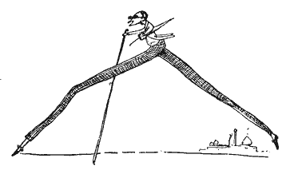
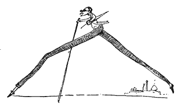

The Grim Past

Eliot DiGiorno was born on October 7th, 1999. He was born in the wine cellar of the Palace of Versailles on a crisp autumn night. He lived in France for five years before he set off into his American dream. That's a lie, he had no dreams.
All he did was:
- move to Massillon, Ohio and chill out there
- snow stuff there because apparently it actually snows there.
- play a lot of computer games with his family because he was (is) a massive nerd.
- when he was 11, move down to the boiling south where he was upset that he had to move so much.
- play soccer for CESA for a season and he hate it, so he quit like the quitter he is.
Things began to change once he stopped eating wheat (and met me, of course).
The Present
 

Eliot is doing all kinds of crazy stuff with his life right now. He goes to school, which he's pretty good at, and then he goes home and he just gets taller. He probably plays a lot more video games than he'd like to admit. He really likes dogs, almost to the point where you're uncomfortable but not quite there yet. He doesn't listen to music, which is beyond me, but he likes art, which is nice.
He thinks he's dashing and a lot of times I don't think he's human because he doesn't eat or sleep. His favorite color is orange and he's really bad at answering questions. He's never seen any Disney movie (yet another reason he actually isn't human) and he lives with his parents, his brother, Carson, and Roger his rabbit. He can be kind of annoying but he's overall a sweet guy with legs that go on for miles.